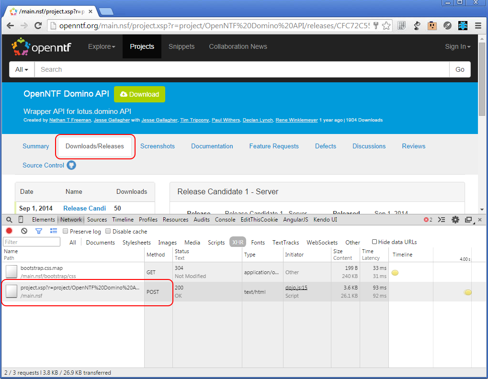
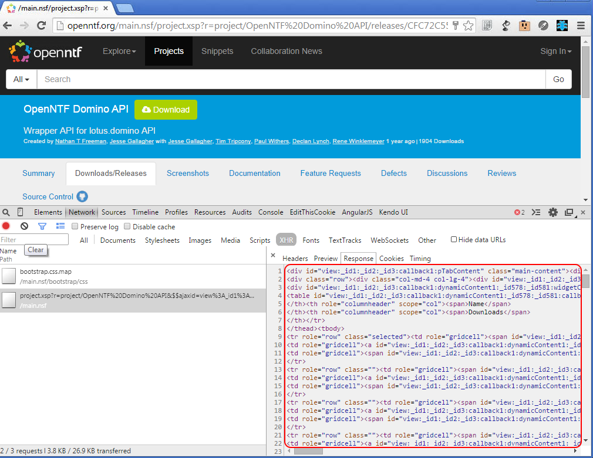

Intro
I'm sorry for the long post, but I can assure you that this is the shortest version of this post I drafted (over multiple days). M-V-C is a big topic, and I hope I've parsed out the reasoning in favor of its adoption.
Drink the Kool-Aid®
At MWLUG, Jesse Gallagher showed off what I believe to be the gold standard form of XPages development; recording on YouTube. Jesse showed off his Frostillic.us framework (an evolved version of his XPages Scaffolding), which addresses much of what I talk about. Jesse is most of the way through a blog series on how to use said framework, which is definitely worth the read. I'm not trying to man-crush on Jesse, but the next conference I see him at, I will do my best to buy him a beer.
A Brief History
XPages is an IBM proprietary abstraction layer for Java Server Faces. Java Server Faces has evolved over the years since its creation in 2004, but when IBM began adopting the XFaces (eventually renamed to XPages) platform, it initially began about 2005; according to Wikipedia.org. While some of the later features of the 2.x line have been back-ported, we're definitely dealing with a unique platform.
JSF as the Foundation
When JSF first started, it set out to accomplish a couple very specific things:
- create a way of handling application and UI logic, with managed state
- provide JSP custom tag library, for expressing design within a JSP page (which evolved into Facelets with JSF 2.x)
So, JSF, which is geared to Java Enterprise Edition developers, is meant to abstract the handling of managed states and design elements to speed up application interface development. This is, ultimately, what XPages does; this shouldn't be surprising, as it's an abstraction layer), not a replacement.
AJAX and XHRs in XPages
<Voice of David Attenborough> When "Web 2.0" was still just a catch phrase (prior to around 1999) the web cried out in anguish. Then, a champion appeared, AJAX) (Asynchronous JavaScript + XML). AJAX introduced us to the XMLHttpRequest (XHR) and brought in the ability for a programmatic, asynchronous loading of content, based on the user's interaction. The web rejoiced and new development patterns were introduced.
XPages makes use of XHRs with every partialRefresh event, usually in the form of a POST. AJAX/XHRs are great, with state-ful scenarios, as you're getting "just a piece" of the whole.
Here's an example, taken from the always excellent OpenNTF.org site. Inside a project page, there are the tabs for the content pane. Selecting a tab fires a dojo XHR POST to the server, which then loads the content for the element to be changed, and the client-side XSP object loads it into the DOM (at the ID specified). XPages does this with HTML generated from the server session Domino has established for the user's interaction. You can view these interactions from most web browsers, just open up the developer tools for your browser (shown is Chrome's DevTools) and look for network events.


Why XHRs?
These XMLHttpRequests occur a lot, especially in partialRefresh (refreshMode="partial") heavy applications. This increases the reliance on the managed state aspect of your XPage'd application and your user's in-memory session (on the server). This makes XPages quite state-ful, IMO. It's also easy, especially in complex, partialRefresh heavy applications, to overdo what your partialRefresh requires. Many in the community talk about the performance hit of partialRefresh es that don't use partial execution (execMode="partial", which only evaluates what resides inside the execId, for the server's computation). To help automatically remove some of this bloat, Sven Hasselbach shared a client-side JavaScript snippet which assists in the reduction of the traffic. To me, this is great (good developers are lazy, right?), but still doesn't quite get us to the fundamental issues that many novices make in XPages development.
Stop Using Your XPage for Application Logic
Yes, you read that correctly. Ideally, your XPage'd content should be strictly presentation layer code. The more we jam into our XPage, be it execution blocks or SSJS libraries, the more must be computed. When we run a build on an application, it builds out your design elements to a more XSP engine friendly format, but leaving that code block in the design element makes for spaghetti code™, which is far less maintainable in very large applications. Being accustomed to supporting large scale applications, I'm used to performing more searching of design elements to find what to fix, than implementing an actual fix, and that's just silly. Domino SSJS libraries are worse as, when they become large, suffer the effect of being run-time executed code. Think of a very large string being parsed on-demand. There is plenty of discussion and approaches on the subject, but ultimately, in large applications, it works, but it's inefficient.
M-V-C is the Way
So, be it an XPages "client" / purely presentation layer approach or a(n arguably) more modern approach, we need to separate our application logic from our presentation layer. The bottom line is to write applications which are not state-ful, except in the presentation layer. In other words, "I stand with Jesse".
What to Focus On
- (Controller) controller classes, which handle how our application works (work flow, sending notifications, etc.)
- (Model) model classes, which handle how we interact with our data store (Domino document, etc.)
- (View) rendering classes, which handle how to present to the page (a dirty approach would merge this with the model classes)
The biggest development shift for many, I believe, is to adopt the controller classes as being separate from the rest of their application logic; to get it into a one-stop shopping for app logic. For more on why M-V-C in particular is best, I'll leave that to those who have already done the work. Jesse Gallagher has gone through his series on XPages MVC Experiments and Gary Glickman has a great series on "Rethinking the Approach to XPage Development".
The XPages Approach
Managed Java Beans, with Expression Language (EL) bindings. Seriously, just have managed beans for your respective M-V-C classes and you invoke your entire application by EL. For more demonstration of this, see the video on YouTube of Jesse's "Building an Structured App with XPages Scaffolding"; have I plugged that enough yet?
You will also notice that this sounds easy and the truth is, it is much easier when you don't have to search through your code, worry about where to put validation (in the control tag? on submit of the form?), or how you can interface your application to external sources/applications.
The Modern Web Approach
Mark Roden has been tackling the subject of Angular.js in XPages. What this really shows is the flexibility of segregated application logic on the server, accessed via a super-heroic (client-side) JavaScript framework, which is RESTful (REpresentational State Transfer, without state defined, except in the network request via end point) by nature. This approach has great appeal as it performs great on mobile devices and desktop browsers alike. I think Mark's session at MWLUG should have been named "Write Once, Run Everywhere" (as opposed to "... Anywhere"), as it demonstrated the flexibility of this M-V-C approach with the server.
The reason I regard this as the "modern web" approach is that most not-IBM specific development that make great use of M-V-C practices are using client-side frameworks to do the serious grunt work with validation on the server via RESTful API. If it makes you feel better, you can consider this an "alternate" approach, but this maps to what the majority of the modern (and awesome!) web development world is doing.
In Summary
I hope you see how this all maps in the progression of the types of XPages development. If nothing else, I hope this post may give you a good number of ideas with which to try and, hopefully, improve how you build your applications to make things easier on yourself, as a developer. As always, best of luck, and please, discuss!